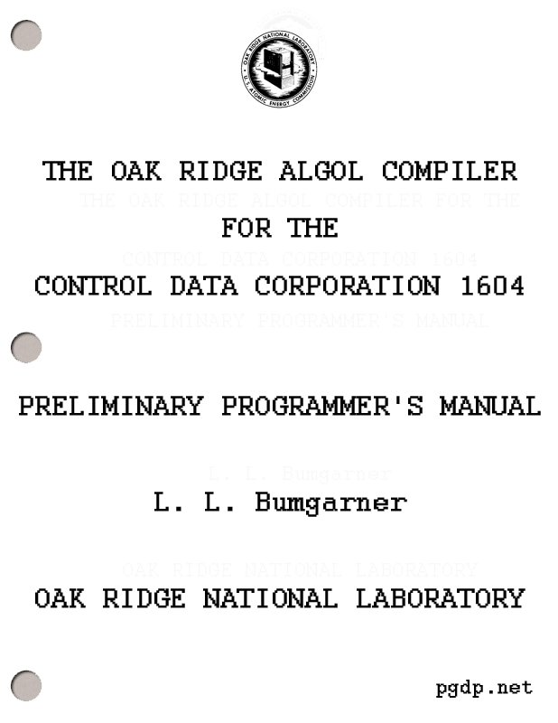

Title: The Oak Ridge ALGOL Compiler for the Control Data Corporation 1604
Author: L. L. Bumgarner
Release date: November 17, 2015 [eBook #50468]
Most recently updated: October 22, 2024
Language: English
Other information and formats: www.gutenberg.org/ebooks/50468
Credits: Produced by David Starner, Stephen Hutcheson, and the
Online Distributed Proofreading Team at http://www.pgdp.net
(This book was produced from images made available by the
HathiTrust Digital Library.)

ORNL-3460
UC-32—Mathematics and Computers
TID-4500 (23rd ed.)
L. L. Bumgarner
OAK RIDGE NATIONAL LABORATORY
operated by
UNION CARBIDE CORPORATION
for the
U.S. ATOMIC ENERGY COMMISSION
Printed in USA. Price: $1.25 Available from the
Office of Technical Services
U. S. Department of Commerce
Washington 25, D. C.
LEGAL NOTICE
This report was prepared as an account of Government sponsored work. Neither the United States, nor the Commission, nor any person acting on behalf of the Commission:
A. Makes any warranty or representation, expressed or implied, with respect to the accuracy, completeness, or usefulness of the information contained in this report, or that the use of any information, apparatus, method, or process disclosed in this report may not infringe privately owned rights; or
B. Assumes any liabilities with respect to the use of, or for damages resulting from the use of any information, apparatus, method, or process disclosed in this report.
As used in the above, “person acting on behalf of the Commission” includes any employee or contractor of the Commission, or employee of such contractor, to the extent that such employee or contractor of the Commission, or employee of such contractor prepares, disseminates, or provides access to, any information pursuant to his employment or contract with the Commission, or his employment with such contractor.
ORNL-3460
Contract No. W-7405-eng-26
Mathematics Division
THE OAK RIDGE ALGOL COMPILER FOR THE CONTROL DATA CORPORATION
1604—PRELIMINARY PROGRAMMER’S MANUAL
L. L. Bumgarner
DATE ISSUED
JAN 30 1964
OAK RIDGE NATIONAL LABORATORY
Oak Ridge, Tennessee
operated by
UNION CARBIDE CORPORATION
for the
U.S. ATOMIC ENERGY COMMISSION
L. L. Bumgarner
This document is a preliminary programmer’s manual for use of the Control Data 1604 Algol Compiler. The compiler was constructed by the Programming Research Group of the Mathematics Division in cooperation with Control Data Corporation. A knowledge of Algol 60 is assumed. Included are descriptions of input-output facilities and details for operation under the monitor system.
This document is to serve as a programmer’s manual for the Algol compiler constructed as a cooperative project by Control Data Corporation and the Mathematics Division of Oak Ridge National Laboratory. The compiler is designed for the Control Data 1604 and 1604-A computers. The document is preliminary in that the compiler is not thoroughly tested and may undergo further development.
The reader is assumed to be familiar with Algol 60. The defining descriptions are the two reports on Algol 60 available in the following references:
1. P. Naur et al, “Report on the Algorithmic Language Algol 60,” Comm. Assoc. Comp. Mach., 3 (1960), No. 5, 299-314.
2. P. Naur et al, “Revised Report on the Algorithmic Language Algol 60,” Comm. Assoc. Comp. Mach., 6 (1963), No. 1, 1-17.
The second report clears up certain ambiguities that appeared in the first report. The reports are not easy reading for the novice. The following expositions are more readable:
21. Baumann, Bauer, Feliciano and Samelson, Introduction to Algol, Prentice-Hall, Inc. (to be published in late 1963).
2. Bottenbruch, H., “Structure and Use of Algol 60,” Jour. Assoc. Comp. Mach., 9 (1962), No. 2, 161-221, and ORNL-3148.
The Baumann publication also contains the revised Algol 60 report.
Throughout this document various examples of statements and declarations appear without the semicolon which is always required for separating them. This is to avoid the implication that the semicolon is part of the statement or the declaration. In sentences, a comma or period may appear where a semicolon or other delimiter would be indicated in the context of a program.
Word delimiters rendered in bold-face type in the Algol report are herein indicated by underlining.
The compiler correctly handles programs written in Algol 60 subject to the following restrictions.
1. The use of an integer label as an actual parameter will cause an incorrect program to be compiled.
2. A GO TO statement with an undefined switch designator as the designational expression will cause incorrect operation of the final program.
3. Type restrictions:
(a) The exponentiation expression x ↑ y will have type real unless x is of type integer and y is a non-negative integer constant. This differs slightly from the definition in the Algol report but will generally cause no difficulty.
3(b) In the construction
<if clause> <simple arithmetic expression>
else <arithmetic expression>
the arithmetic expressions must have the same type, or else an incorrect program will be compiled. For example, in the statement
x := if a < b then z else w
z and w should both be declared real or both integer.
(c) In a procedure call (procedure statement or function call) each actual parameter having an arithmetic value must have the same type as the corresponding formal parameter in the procedure declaration. The type of the formal parameter is that designated in the specification part if it appears there. If a formal parameter representing an arithmetic quantity does not appear in the specification part, it is assumed to be specified real. Full use of specifications is desirable for descriptive purposes and for optimization.
Caution. Restriction (c) is more likely to cause errors than the other restrictions. It is very easy to write P(1,2) when the parameters of P are specified real, but incorrect coding will result. The call P(1.0,2.0) works correctly.
4. Standard procedure names (see section VI) used as parameters in procedure calls will cause an incorrect program to be compiled. A call, therefore, such as
P(sin)
is incorrect. Note, however, that a call of the type
Q(sin(x))
causes no trouble. The case P(sin) can be programmed in another way. 4 Make the declaration
real procedure sin 1 (t); real t;
sin 1 := sin(t).
The call
P(sin 1)
is then correct.
5. Arrays called by value are not handled. If an array identifier appears in the value part, an incorrect program will be compiled.
6. “Dynamic” own arrays are not handled. This means that all own arrays are treated as having constant subscript bounds; this constitutes one possible interpretation of the Algol 60 report. An own array may be declared with variable subscript bounds, but only one allocation of storage will be made, and if the bounds change, this will be ignored.
7. Recursive procedures are not handled. This restriction encompasses all cases of a function designator appearing in the actual parameter part of a call of the same function, unless that function is a standard function. Thus f(f(x)) is not permitted in general, but sin(sin(x)) is allowed.
There are two distinct modes of operation: ALGO and ALDAP.
ALGO is a compile-and-execute mode in which the two phases cannot be separated. The Algol program is translated into a machine language program in core memory, and execution of the program immediately and automatically follows. There is no assembly program phase.
ALDAP makes use of the CODAP assembly program facilities. It is possible to compile procedures separately and reference them from an Algol program. The procedures may be written in Algol, CODAP or Fortran. This provision is made possible with the aid of the external declaration discussed in section V.
The ALGO mode provides significantly faster compilation than the ALDAP mode for most programs. The target programs produced in the two modes are essentially the same. In the ALGO mode, program checkout may be done at the Algol language level. In the ALDAP mode, checkout may also be done at the machine and assembly language levels, and modifications may be made at these levels.
There are seven standard procedures for input-output, five for intermediate tape, and three for checking tape conditions. Two declarations, format and list, are additions to the language.
The input-output procedures are: READ, PAGE, PRINT, WRITE, PUNCH, INPUT, and OUTPUT.
The READ procedure is used to input numbers and Boolean values. A READ statement has the form
READ (V1, V2, ..., Vn)
where n is any positive integer and each Vk is a variable. For example, the statement
READ (X, Y, A[1], B[1])
will input values into the four variables listed. For inputing values into an array, a statement such as the following might be used:
for I := 1 step 1 until 100 do READ (A[I]) .
The READ procedure inputs numbers and truth values. A number must be a legal Algol number (although an E may be substituted for the symbol ₁₀). For input into a Boolean variable, the truth values true and false are accepted; also, a non-negative number or a plus sign is interpreted as false and a negative number or a minus sign is interpreted as true. A blank is read as zero.
With the READ procedure, the type of a number on a data card does not have to be the same as the type of the variable to which it is assigned. Any necessary type conversions are done automatically. If N is the next number in the data, the statement
READ (V)
is equivalent to the statement
V := N .
The data cards are free field. The number of values per card, the length of numbers, and the number of spaces are arbitrary. A comma, however, must follow each number, including the last one on the last data card.
In reading a value into a subscripted variable, the current value of the subscript expression is not affected by that READ statement. For example, in the statement
READ (I, A[I])
the old value of I is used in A[I].
The READ procedure will input data from the standard input medium only.
The PAGE procedure is used to cause a page ejection on the standard output medium. PAGE has no parameters. It is called by simply writing
PAGE .
The input and output procedures described in the rest of this section, as well as the binary read and write procedures, make use of the concept of a list. A list[1] is a sequence of expressions. An example is
U + V, C[0], if B then X else Y .
It may be inconvenient in some cases to write down all of the expressions explicitly. The loop expression[1] may be used as a shorthand device in a list. It is an Algol-like construction of which the following is an example:
for I := 1 step 1 until 1000 do A[I] .
This is equivalent to the list
A[1], A[2], ..., A[1000] .
The entity following do in a loop expression may itself be a list, but this list must be enclosed in parentheses if it contains more than one member.
The loop expression
for I := 1 step 1 until 1000 do (A[I], B[I])
is equivalent to the list
A[1], B[1], A[2], B[2], ..., A[1000], B[1000] .
The loop expression
for I := 1 step 1 until 10 do (A[I], for J := 1
step 1 until 20 do B[I,J])
is equivalent to the list
A[1], B[1,1], B[1,2], ..., B[1,20],
A[2], B[2,1], B[2,2], ..., B[2,20],
....................................
A[10], B[10,1], B[10,2], ..., B[10,20] .
A list may be given a name through a list declaration. A list declaration has the form
list identifier := list .
Examples are:
list L := X, A + B
list M := for I := 1 step 1 until N do A[I] .
A list identifier may itself appear in a list. One of the above examples might be written with the aid of the following declaration:
list L := for J := 1 step 1 until 20 do B[I,J] .
The loop expression is then
for I:= 1 step 1 until 10 do (A[I], L) .
A list declaration obeys the same rules of syntax and scope as do other declarations.
A list identifier may be used as an actual parameter of a procedure call, with the requirement that the corresponding formal parameter be specified list. However, an actual list may appear as a parameter only in calls of the standard procedures, as described.
The PRINT procedure is used to output numbers in a simple, rigid manner. A PRINT statement has the form
PRINT (list),
where list is described above. An example of a PRINT statement is
PRINT (A, if N = 0 then S else T).
A PRINT statement always puts out at least one line printer image. A line may contain up to 6 numbers, each of which is in scientific notation with 10 decimal places. Each number is right-justified in a field of 20 columns. (The format is 6E20.10.) The above PRINT statement will output two numbers in the first forty spaces, and the rest of the line will be blank. A PRINT statement such as
PRINT (for I := 1 step 1 until 10 do A[I])
will output one line of 6 numbers followed by one line of 4 numbers. Single spacing between lines is automatic.
The PRINT procedure always outputs on the standard output medium.
The WRITE procedure is used to output strings. Examples of WRITE statements are:
WRITE ('TABLE')
WRITE (if D < 0 then 'TRUE' else 'FALSE') .
Each parameter must be a string expression (see Appendix A for definition of string expression). There may be any number of parameters, but each string will appear on a separate line. If a string is too long to go on one line, it will be continued on the next line. A string should not 10 contain another string. Lines are single spaced. Each WRITE statement causes at least one line printer image to be put out.
The WRITE procedure always outputs on the standard output medium.
The PUNCH procedure is used to output numbers on punched cards in a form which can be input by the READ procedure. Each number punched will be followed by a comma. Each card punched may contain up to four numbers. Each number will be of type real, but since the READ procedure makes any necessary type conversions this is unimportant. A PUNCH statement has the same form as a PRINT statement. Each PUNCH statement causes at least one card image to be put out.
The PUNCH procedure always outputs on the standard punch medium.
The two input and output procedures remaining to be described make use of formats. The formats are exactly those used in Fortran, and readers unfamiliar with Fortran will find it necessary to refer to the Control Data Fortran-62 Reference Manual for details on the use of formats.
A format is treated as a string. Formats will be written, for example, as follows:
'(6E20.10)'
'(1H0, 9X, 5HTABLE, I3)' .
Note that the parentheses are part of the format, and both parentheses and string quotes are required.
As will be indicated below, a format string may appear explicitly in an INPUT or OUTPUT statement. If the same format string 11 is used more than once, however, it may be convenient to give it a name through a format declaration. A format declaration has the form
format Identifier := '(Fortran format)' .
Examples are:
format F := '(6E20.10)'
format G := '(1H0, 9X, 5HTABLE, I3)' .
A format declaration obeys the same rules of syntax and scope as do other declarations.
Format identifiers may be used as parameters, and format is a specifier.
The INPUT procedure is used to input numbers and Hollerith information in accordance with Fortran-type formats. An INPUT statement has one of the forms
INPUT (M,F,list)
INPUT (M,F)
where:
(1) M is the logical unit designation. M may be any arithmetic expression. If it is not integral-valued, the action
M := entier (M + 0.5)
will take place. The standard input unit is 50.
(2) F is a format expression. It may be an actual format string, a format identifier, a conditional format expression, or any variable which contains the starting address of a format string. Caution. In the case of a conditional format expression, format strings and format identifiers should not be mixed. For example, (a) and (b) 12 below are permitted, but (c) will cause an incorrect program to be compiled:
(a) if B then '(E20.7)' else '(E20.6)'
(b) if B then F1 else F2
(c) if B then F1 else '(E20.6)' .
(3) list is as defined previously. Of course, for INPUT all expressions must be variables.
The following are examples of an INPUT statement:
INPUT (50, '(4E20.8)', N, for I := 1 step 1 until N do A[I]).
INPUT (if A < B then M else N, F, X, Y, Z) .
Each INPUT statement causes at least one card image to be read.
Note that the INPUT procedure does not make type checks between the data and the program variables. A floating point number, for example, is stored as such regardless of the type of the variable to which it is assigned.
Caution. It is strongly recommended that not both READ and INPUT be used in the same program. Each buffers ahead one card image. Furthermore, each INPUT statement causes at least one card image to be read while a READ statement may not cause a new card image to be read. Mixing the two statements will require quite careful use of blank cards in the data to allow for the buffering.
The OUTPUT procedure is used to output numbers and Hollerith information in accordance with Fortran-type formats. An OUTPUT statement has one of the forms
OUTPUT (M,F)
OUTPUT (M,F,list)
where M, F, and list are as indicated above. The following are examples of OUTPUT statements:
OUTPUT (51, '(5HTABLE)')
OUTPUT (51, '(1H0,9X,10E10.2)', for I := 1 step 1 until 100 do A[I]) .
Each OUTPUT statement causes at least one line printer image to be put out. The standard output unit is 51, and the standard punch unit is 52.
There are five standard procedures for making use of magnetic tape for auxiliary storage:
BINREAD, BINWRITE, ENDFILE, REWIND and BACKUP.
A BINREAD statement has the form
BINREAD (M, list)
where M and list are the same as for INPUT. Each BINREAD statement causes the designated unit to move forward one logical record, reading in binary format into the variables of the list. If fewer variables appear in the list than are on the record, only those values are read and the tape moves on to the end of the record. If more variables appear in the list than are on the record, this is treated as an error and the program is terminated.
The following is an example of a BINREAD statement:
BINREAD (6, for I := 1 step 1 until 1000 do A[I]) .
A BINWRITE statement has the form
BINWRITE (M, list)
where M and list are the same as for OUTPUT. Each BINWRITE statement causes the values of the list expressions to be written in one logical record in binary format on the designated unit.
An ENDFILE statement has the form
ENDFILE (M)
where M is a unit designation as before. The statement causes an end-of-file record to be written on the designated unit.
A REWIND statement has the form
REWIND (M)
where M is a unit designation as before. The statement causes the designated unit to be rewound to the load point.
A BACKUP statement has the form
BACKUP (M)
where M is a unit designation as before. The statement causes the designated unit to be backspaced one logical record of binary information or one physical record of BCD information.
The checking procedures are: EOF, READERR, and WRITERR. These are Boolean procedures.
An EOF call has the form
EOF (M)
where M is a logical unit designation as before. It yields the value true if the previous read operation encountered an end-of-file or the previous write operation encountered an end-of-tape; otherwise it yields the value false.
An example of the use of an EOF call is:
if EOF(6) then goto ALARM .
A READERR call has the form
READERR (M)
where M is a logical unit designation as before. It yields the value true if the previous read operation produced a parity error; otherwise it yields the value false.
READERR should not be used for testing the operation of a READ statement. The READ procedure has its own facilities for checking, making multiple attempts in case of errors, and terminating the program if necessary.
A WRITERR call has the form
WRITERR (M)
where M is a logical unit designation as before. It yields the value true if the previous write operation produced a parity error; otherwise it yields the value false.
An external declaration is required for each nonstandard library procedure or procedure compiled separately from the calling program, whether in Algol, Fortran or CODAP. Standard Algol procedures are described in Section VI. Note that a CODAP subroutine must take account of the special structure of the Algol calling sequence as described in Appendix C or be treated as a Fortran subprogram. The use of Fortran subprograms is described in Appendix G.
The external declaration has one of the following forms:
external I1, ..., In
real external I1, ..., In
integer external I1, ..., In
Boolean external I1, ..., In
where each Ik is an identifier and n is any positive integer. A type declarator preceding the declarator external signifies a function procedure having that type. Note that no information about parameters appears in an external declaration. See Appendix A for syntactical definition.
In the ALGO mode, LIB cards must be included in the job deck for nonstandard library routines, in addition to the external declarations. Details are found in Section VIII.
Certain procedures are used without being declared. These include the standard functions listed in the Algol 60 report and the input-output and intermediate tape procedures. The complete list is as follows:
ABS
SIGN
SQRT
SIN
COS
ARCTAN
LN
EXP
ENTIER
EOF
READERR
WRITERR
FORTRANF
FTNF
READ
PAGE
WRITE
PUNCH
INPUT
OUTPUT
BINREAD
BINWRITE
ENDFILE
REWIND
BACKUP
FORTRAN
FTN
These procedures are global to the program. They behave as though declared in a fictitious block surrounding the entire program.
In a complete compilation the compiler makes two passes on the Algol source program. If errors which the compiler cannot correct are detected in the first pass, then the second, or translation, pass will not be made. The following types of errors are detected:
The program listing and any diagnostics always appear on the standard output medium. In the case of a syntactical error, a message will appear in the program listing one or several lines below the error. The location of the error in the program will be further pinpointed in the line of symbols immediately below the error message. This line will be a short portion of the program with the last symbol in the line being the one which indicates the error. For example, a declaration might be out of place as follows:
.
.
.
x := a + b; 'INTEGER' K;
**** LAST CHARACTER INDICATES SYNTACTICAL ERROR.
x := a + b; INTEGER
.
.
.
In some cases the line below the message may differ slightly from the corresponding string of symbols above; for example, an identifier might be rendered by Ident. It is possible for a single syntactical error to cause more than one diagnostic.
A few syntactical errors are corrected by the compiler, and a message is put out to this effect. An example is a semicolon immediately preceding else.
According to the comment conventions of Algol, any string of symbols following end and not containing end, else or a semicolon is 19 treated as comment. As a result, the omission of one of these symbols following end does not always cause an error in compilation but will cause a portion of the program to be skipped over by the compiler. Thus for example, in
... x := a + b end for i := 1 step 1 ...
the FOR statement will be skipped at least in part. The compiler will put out a caution message in this and some other cases, but it will not change the program.
If an identifier is not declared (or possibly declared in the wrong place), a message is put out below the program listing together with the undeclared identifier.
The compiler does not check the type of identifiers. Therefore, such errors as a Boolean variable in an arithmetic expression, or the brackets of a subscripted variable replaced by parentheses, are not detected, and an incorrect program may be compiled.
The Algol program is punched on cards in the hardware representation described in Appendix B. The format is essentially free field: spaces have no significance except within escape symbols and string quotes. Only the first 72 columns, however, are interpreted by the compiler. The remaining columns may be used for identification purposes. Care must be taken when a string is continued onto the next card, as the continuation will begin in column 1. The program listing will have the same format as the cards.
In the following discussion the symbol Ø signifies the letter O where necessary for emphasis, and the symbol Δ signifies a 7-9 punch in card column 1.
The compiler operates under the ALGOL Control System. This system is a subordinate control routine of the Master Control System of the CO-OP Monitor Programming System. ALGOL is quite similar to the subordinate control routine COOP.
ALGOL is called with an MCS (Master Control System) card having ALGOL punched beginning in column 2. Other details of this card are available in descriptions of the CO-OP Monitor. It should be noted in selecting a standard recovery procedure that the concept of COMMON is not used in Algol.
Following the MCS card will be a control card giving instructions to the control routine ALGOL. It will name one of the following routines: ALGO, ALDAP, EXECUTE, BINARY, FORTRAN, REWIND or DEFINE. These will be discussed below.
The EOP (end-of-program) card has the characters 'EØP' punched in columns 10-14.
In the ALGO mode, one EOP card must be used to terminate the program.
In the ALDAP mode, one EOP card must be used to terminate each Algol program or Algol procedure being compiled separately.
The ALGO mode of running an Algol program is the simplest and the fastest. It will be the more suitable for a large number of programs. Unless the programmer has special reasons for using the ALDAP mode, the ALGO mode is recommended.
The Algol program must be self-contained except for standard procedures and library procedures on the library-systems tape. The job deck must have the following cards in the specified order:
The PROGRAM card is optional. It is useful for identification purposes, and in the ALDAP mode it serves to name the program entry point.
The format of the card is free field. The characters PRØGRAM must appear followed by the program name, which must be alphanumeric.
The ALDAP mode is used to compile an Algol program or procedure to a relocatable binary or a CODAP format. Execution is optional. For compilation only, the program deck may consist of any mixture of Algol programs and procedures, any number of which may be in CODAP. If execution is desired, part or all of the program deck may have been previously compiled, so that the deck may have Algol, CODAP and relocatable binary cards.
The format of the ALDAP statement is:
ΔALDAP,L,B,n.
where
A period may terminate the statement at any point, with remaining fields treated as zero.
If the program listing key (L) is a 1, an assembled listing of the CODAP object code will be produced on the standard output medium. If the key is zero or blank, no such listing will be produced. A listing 23 of the Algol program and any diagnostics will always be produced on the standard output medium.
If the punched card output key (B) is a 1, a relocatable binary deck will be produced on the standard punch medium. If the key is a 2, a CODAP symbolic deck will be produced on the standard punch medium. If the key is a 3, both a symbolic deck and a relocatable binary deck will be produced on the standard punch medium, with the symbolic deck appearing first. If the key is zero or blank, no deck will be produced.
The logical unit number (n) specifies the unit which is to be the load-and-go tape if it is one of the integers 1-49 or 56. If n is some other integer or blank, no load-and-go tape will be written. The load-and-go tape is required when execution of the program is to follow.
Examples:
This statement will cause the Algol/CODAP deck to be compiled, an assembled listing to be produced on the standard output medium, a relocatable binary deck to be produced on the standard punch medium, and a load-and-go tape written on logical unit 56.
This statement will cause the Algol/CODAP deck to be compiled, and an assembled listing to be produced on the standard output medium.
For compilation only of an Algol/CODAP program deck, the job deck should contain the following cards in the specified order:
For compilation and execution of an Algol/CODAP program deck, a load-and-go tape must be requested in the ALDAP control statement. If no relocatable binary cards follow the last subprogram to be compiled, then the program deck must be terminated by an EOP card which is in addition to the EOP card or END card (the latter for a CODAP subprogram) which terminates the last program or procedure. The FINIS card then follows this additional EOP card. An EOP card always causes a TRA card image to be written on the load-and-go tape.
The control statements EXECUTE, BINARY, FORTRAN, REWIND and DEFINE may be used as described in the “CO-OP Monitor Programmer’s Guide”. BINARY is useful for loading a relocatable binary deck onto the load-and-go tape prior to compilation of an Algol calling program, where the subprogram in relocatable form might have the same name as a library routine. If the Algol program preceded the relocatable deck, the library routine would be fetched by the loader and an error indication given.
The CO-OP control statements LOAD and EXECUTER are not used by ALGOL.
Each of the following examples describes a job deck which illustrates a different way of compiling and executing the same Algol program. The program calls a library procedure with entry point named BESSEL, and the program contains at least one other procedure. On the MCS card only the first field is indicated, as the others may vary from one installation to another.
This job uses the ALGØ mode.
ΔALGØL, ... .
ΔALGØ.
LIB BESSEL
PRØGRAM SAMPLE
Algol Program (with external declaration of BESSEL)
'EØP'
Data
This job uses the ALDAP mode, compiling the entire program at once. The ALDAP control statement calls for an assembled listing, a binary deck, and a load-and-go tape on logical unit 56. The execute card gives a two minute time limit on the execution.
ΔALGØL, ... .
ΔALDAP,1,1,56.
PRØGRAM SAMPLE
Algol Program (with external declaration of BESSEL)
'EØP'
'EØP'
FINIS
ΔEXECUTE,2.
Data
This job consists simply of the execution of the relocatable program deck obtained in example 2.
ΔALGØL, ... .
ΔEXECUTE,2.
Relocatable Deck
Data
This example is similar to example 2. Here the main program and one of its procedures are to be compiled separately.
ΔALGØL, ... .
ΔALDAP,1,1,56.
PRØGRAM SAMPLE
Algol Program (with external declaration of both BESSEL and the procedure being compiled separately)
'EØP'
Algol Procedure
'EØP'
'EØP'
FINIS
ΔEXECUTE,2.
Data
In this example the procedure which was compiled separately in example 4 is being compiled by itself, i.e., the calling program is not in the deck at all. Of course there is no execution in this case. Note that no load-and-go tape is requested and only one EOP card is used. There cannot be a PROGRAM card.
ΔALGØL, ... .
ΔALDAP,1,1.
Algol Procedure
'EØP'
FINIS
Here the procedure compiled by itself in example 5 appears in the program deck in relocatable binary form, while the calling program is in the Algol language.
ΔALGØL, ... .
ΔALDAP,1,1,56.
PRØGRAM SAMPLE
Algol Program (with external declaration of both BESSEL and the procedure in relocatable form)
'EØP'
FINIS
ΔEXECUTE,2.
Relocatable Deck
Data
The relocatable deck here must be terminated by two TRA cards. One of these is generated by the compiler when it processes the EOP card which must terminate the procedure for compilation, as in example 5. The second TRA card can be obtained by using a second EOP card, as in example 2. Alternatively, the second TRA card can be added to the relocatable deck before execution. Note that this second TRA card must not be used when the relocatable deck is loaded by a BINARY control statement. This is illustrated in the next example.
In this case the previously compiled procedure has the same name as a routine on the library-systems tape.
ΔALGØL, ... .
ΔBINARY,56.
Relocatable Deck (terminated by one TRA card)
ΔALDAP,1,1,56.
PRØGRAM SAMPLE
Algol Program (with external declaration of both BESSEL and the procedure in relocatable form)
'EØP'
'EØP'
FINIS
ΔEXECUTE, 2.
Data
The logical unit number on the BINARY control statement must agree with that which specifies the load-and-go tape in the ALDAP control statement.
The delimiter list is a declarator and a specifier.
<list identifier> ::= <identifier>
<loop expression> ::= <for clause> <arithmetic expression>
| <for clause> <loop expression>
| <for clause> (<list>)
<list element> ::= <arithmetic expression>
| <loop expression>
| <list identifier>
<list> ::= <list element>
| <list>, <list element>
<list declaration> ::= list <list identifier> := <list>
The delimiter format is a declarator and a specifier.
<format identifier> ::= <identifier>
<simple format expression> ::='(<Fortran format>[2])'
| <format identifier>
<format expression> ::= <simple format expression>
| <if clause> <simple format expression>
else <format expression>
<format declaration> ::= format <format identifier> := <format expression>
<string expression> ::= <string>
| <if clause> <string>
else <string expression>
The delimiter external is a declarator.
<external identifier> ::= <identifier>
<external list> ::= <external identifier>
| <external identifier>, <external list>
<external declaration> ::= external <external list>
| <type> external <external list>
One keypunch character is reserved as an “escape symbol”, which we shall here suppose is the apostrophe. This symbol is used to delineate word delimiters and truth values, which are written in boldface type in Algol reference language and publication language and indicated by underlining in this manual. The hardware representation of a word delimiter such as begin is therefore 'BEGIN'. No distinction is made between upper and lower case letters in the hardware language.
The transliteration rules for the non-word delimiters are comprised in the following table. This assumes a 48 character hardware set and is consistent with the usage in the ALCOR group. For some basic symbols alternatives are tolerated, as indicated.
| Reference | Hardware | Tolerated Hardware |
|---|---|---|
| < | 'LS' | 'LESS' |
| ≤ | 'LQ' | 'LSEQ', 'NOTGREATER', 'NOT GREATER' |
| = | 'EQ' | 'EQUAL' |
| ≥ | 'GQ' | 'GREQ', 'NOTLESS', 'NOT LESS' |
| > | 'GR' | 'GREATER' |
| ≠ | 'NQ' | 'NTEQ', 'NOTEQUAL', 'NOT EQUAL' |
| ¬ | 'NOT' | |
| ∧ | 'AND' | |
| ∨ | 'OR' | |
| ⊃ | 'IMP' | 'IMPLIES', 'IMPL' |
| ≡ | 'EQV' | 'EQUIV' |
| ₁₀ | ' | 'E','T' |
| × | * | |
| ↑ | ** | 'POWER' |
| ÷ | // | 'DIV' |
| : | .. | |
| ; | $ | ., |
| := | = | .=, ..= |
| [ | (/ | |
| ] | /) | |
| ‘ | " | '(' |
| ’ | " | ')' |
In the case of the string quotes, the tolerated symbols are required for the inner strings of a nest of strings.
Actually, the compiler can tolerate many other spellings of word delimiters because of its facility for correcting misspellings.
The delimiter go to is accepted with or without the space between the two words, but it is treated as a single delimiter: 'GOTO' or 'GO TO'.
The compiler can also accept a 64 character hardware representation: the full set available on the line printer. In preparing programs, overpunching is used on the 48 character keypunch in this case. The table below indicates the keypunching rules in use at Oak Ridge National Laboratory.
| Reference | Hardware |
|---|---|
| < | 1-8 punch |
| ≤ | 1-5 punch |
| ≥ | 1-9 punch |
| > | 2-7 punch |
| ≠ | 2-6 punch |
| ∧ | 3-7 punch |
| ∨ | 2-4 punch |
| ₁₀ | 1-6 punch |
| ↑ | 2-5 punch |
| ÷ | 3-5 punch |
| : | 2-8 punch |
| ; | 2-9 punch |
| [ | 3-6 punch |
| ] | 3-4 punch |
The other basic symbols are either in the 48 character set or are replaced by word delimiters as above. The symbol := is treated as two symbols in the 64 character set, and = is punched as such.
The following information is necessary for the user writing a non-Algol procedure to be called from an Algol program. The calling sequence differs from that found in many other languages.
The first word of the non-Algol procedure must have a simple jump instruction in its upper half, and the exit line is provided by a jump to this first word. The entry automatically causes the proper return address to be placed in the address portion of the first half-word.
Upon entry to the procedure, index register six contains an address which is used to reference each parameter. To establish linkage with the first parameter, the instruction
LDA 6 0
is performed. This brings into the accumulator a word of one of the following types:
1. SLJ 0 ENA V
2. SLJ 0 RTJ L
In case (1), V is the address of the parameter. In case (2), L is the starting address of a piece of coding for computing the address of the parameter and leaving it in the accumulator (if the parameter is an expression, the address in the accumulator will be that of a temporary containing its value). Case (1) always holds if the parameter is a simple variable, string, array identifier, switch identifier, or procedure identifier. In case (2) the same temporary will be used for all the expressions.
Both cases can be provided for by setting aside two locations for each parameter in the procedure body and placing the instruction
SLJ *-1
in the upper half of each second location. Then after
LDA 6 0
mentioned above,
STA RES1,
where RES1 is the first reserved location for the first parameter, makes the two locations into a closed subroutine. After this, the instruction
RTJ RES1
causes the address of the first parameter to be placed in the accumulator anytime it is performed. This accommodates expressions called by name.
In general, the Kth parameter is referenced as above, but beginning with
LDA 6 (K - 1).
This description does not apply to the standard procedures, each of which has its own special calling sequence.
The address representing a string is that of the first word of string characters. Each left string quote is represented internally by the word
00 ... 03454 ,
and each right string quote by
00 ... 05474 .
The characters of the string which are not string quotes are packed in BCD eight characters per word. These words are in the natural order, the first immediately following the left string quote and the last immediately followed by the right string quote. If the last word before a right quote is not full, the rest of that word is filled out with zeros (not BCD blanks).
The following information may be of interest to programmers desiring an efficient program:
1. The FOR statement is defined with more generality than is useful in most programs. In particular, the arithmetic expressions in the FOR clause are allowed to change in value during execution of the FOR statement. The compiler does not attempt to determine which FOR statements make use of this flexibility and treats all of them in the most general way. Therefore, in a statement such as
for I := 1 step M + N until abs(A - B) do ... ,
the expression M + N is evaluated twice for each iteration, and the expression abs(A - B) is evaluated once for each iteration. If M, N, A, and B do not change in the loop, this is unnecessary. Such inefficiency can be avoided by programming in a slightly different way. The above example can be written as follows:
T1 := M + N; T2 := abs(A - B) ;
for I := 1 step T1 until T2 do ... .
392. The concept of call by value is a device applied to procedures to eliminate unneeded flexibility in procedure calls. If a parameter having a value is referenced more than once in the procedure body and the flexibility of call by name is not needed, then the program is more efficient if the parameter is included in the value part of the procedure heading. If such a parameter is referenced only once, it is more efficient if it is not included in the value part.
3. Array identifiers which are parameters should be specified.
A few features of the language have been subject to more than one interpretation. Fortunately, the vast majority of programs will not involve these ambiguities, but for the few that do it will be necessary to know what decisions the compiler makes. This appendix indicates these decisions for the more controversial areas.
1. Side effects in function designators. The evaluation of primaries in expressions is not strictly left to right allowing for precedence rules. In particular, the value of a variable in an expression is never stored in a temporary simply to preserve its value from change by the evaluation of a function designator in the expression. Otherwise, the evaluation does proceed from left to right and according to precedence rules, including the referencing of formal parameters and the calculation of the address of subscripted variables. All function designators are evaluated in Boolean expressions.
2. Own variables and arrays in procedures. The own quantities local to the body of a procedure which is called from more than one point in a program record the history of the procedure as opposed to a history of each point of reference. In other words, only one copy of the own quantities is preserved.
The standard procedures FORTRAN, FORTRANF, FTN, and FTNF are used to call compiled Fortran subroutines and functions from within an Algol program. Each procedure has one parameter which is a call of the desired Fortran subprogram. The Fortran subprogram must be declared external as described in Section V.
The use of these procedures simply causes a Fortran calling sequence to be generated by the compiler. Of course the subprogram could be written in CODAP as well as Fortran, provided it is designed to link through a Fortran-type calling sequence.
The procedures are used as follows:
Each of these procedures is standard, i.e., available without declaration. FORTRANF and FTNF are used in expressions.
Examples:
x := FTNF (ALPHA(T,A[0,0]))
FORTRAN (SUB(I + J)) .
The following restrictions must be observed: labels, procedures with no parameters, standard procedure names, and array names cannot be used as arguments of a call of a Fortran subprogram. However, in the case of an array, the subscripted variable which is the first element of 42 the array will satisfy a Fortran subroutine which has an array name as a formal parameter. The name of the Fortran subprogram cannot be a formal parameter. Literals must be enclosed in string quotes.
The author was greatly assisted in the preparation of this document by several persons who have contributed labors or advice to the construction of the compiler. These include N. B. Alexander and A. A. Grau, also K. A. Wolf of Control Data Corporation, and especially R. G. Stueland of Control Data Corporation.
ORNL-3460
UC-32—Mathematics and Computers
TID-4500 (23rd ed.)